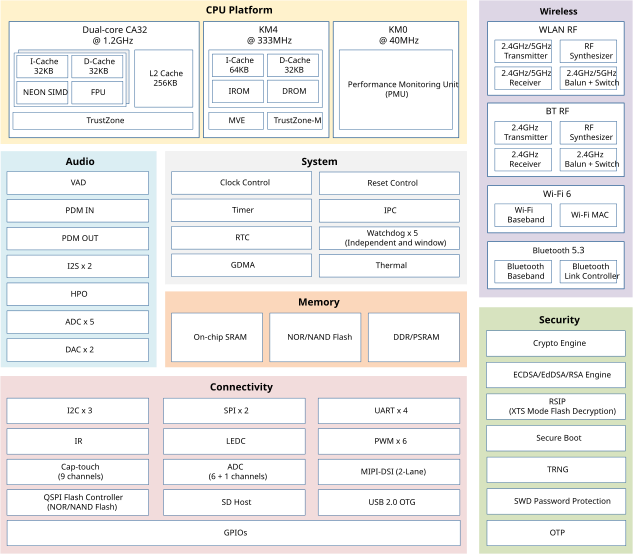

Introduction
The RTL8730E is a highly integrated multi-core microcontroller based on dual-core Arm® Cortex®-A32 and KM4 (Arm® Cortex®-M55 32-bit compatible instruction set) RISC cores, with independently controlled isolated domains for maximum effectiveness and security. It is designed to achieve the best power and RF performance and ultra-low-power consumption, featuring all the characteristics of low-power chips, such as fine-grained clock gating, multiple power modes, and dynamic power scaling.
The Cortex-A32 (CA32), acting as application processor (AP), is the most power-efficient application processor capable of seamlessly supporting 32-bit code, running at a frequency of up to 1.2GHz. The CA32 processor uses an efficient, 8-stage, in-order pipeline that has been extensively optimized to provide the 32-bit Armv8-A features in the smallest footprint and power. Built-in ARM’s TrustZone secures the application codes from malicious attacks. It is an ideal choice for wearables, IoT and rich embedded applications, especially those which require the use of a platform operating system.
The KM4 (also called Real-M300V), acting as network processor (NP), is a 3-staged pipelined 32-bit core that bases on Armv8.1-M architecture supporting Cortex-M55 compatible instruction set, running at a frequency of up to 333MHz. It offers system enhancements such as low power consumption, enhanced debug features, single-precision floating-point unit (FPU), Digital Signal Processing (DSP) extension and M-profile Vector Extension (MVE) instructions, TrustZone-M security for hardware-enforced isolation, and a high level of support block integration.
The RTL8730E is a dual-band (2.4GHz and 5GHz) communication controller that integrates the specifications of Wi-Fi (Wi-Fi 6) and Bluetooth (Bluetooth 5.3). It consists of WLAN (802.11 a/b/g/n/ax) MAC, a 1T1R capable WLAN baseband, RF, Bluetooth and peripherals, providing complete Wi-Fi and Bluetooth functionalities. It is designed with advanced features, enhanced RF performance, reduced audio transmission latency and system power consumption.
A variety of peripheral interfaces, including USB, serial ports, MIPI, LEDC, IR, ADC, etc., as well as sensor controllers (such as ADC, thermal) are integrated into RTL8730E seamlessly. Besides, the RTL8730E has rich audio features for smart audio applications including dedicated microphone interfaces (AMIC/DMIC), built-in voice activity detection (VAD), acoustic echo cancellation (AEC) reference ADC, stereo audio DAC, headphone out (HPO), and I2S. Abundant general-purpose I/O (GPIOs) can be configured to different functions according to different secure IoT (Internet of Things) applications flexibly, especially for intelligent voice interaction applications. The user-friendly development kits (SDK and HDK) are provided to customers for developing applications.
The RTL8730E also incorporates high-speed memories with on-chip SRAM and stacked selectable DRAM (either DDR or PSRAM). A dedicated controller (SPIC) provides a flexible and efficient way to access NOR/NAND Flash (e.g. byte and block access). A multi-layer AXI interconnect support internal and external memories access.
Block Diagram
The functional block diagram is illustrated below, which provides a view of the chip’s major functional components and core complexes.
{kind=link}

Block diagram
Note
For different part numbers of RTL8730E series, refer to Products for more details.